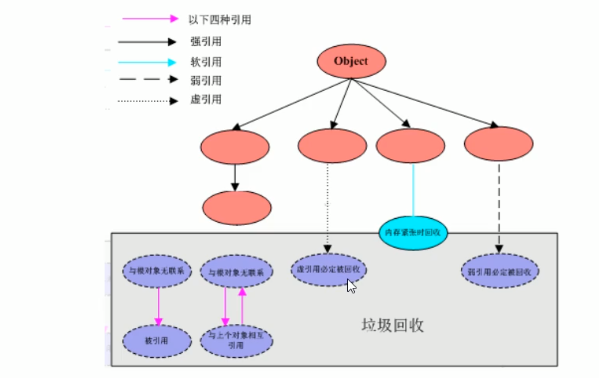

引用
强引用 Reference
当内存不足，JVM开始垃圾回收，对于强引用的对象，就算是出现了OOM也不会对该对象进行回收，死都不收。是造成JAVA内存泄漏的主要原因之一。
软引用 SoftReference
当内存够用，不回收。内存不够用，回收。
弱引用 WeakReference
不管内存够不够用,只要有GC，都回收
weakHashMap
private static void myWeakHashMap() {
WeakHashMap<Integer, String> hashMap = new WeakHashMap<>();
Integer key = new Integer(1);
String value = "WeakHashMap";
hashMap.put(key, value);
System.out.println(hashMap);
key = null;
System.out.println(hashMap);
System.gc();
System.out.println(hashMap);
}
{1=WeakHashMap}
{1=WeakHashMap}
{}
虚引用 PhantomReference
必须和引用队列一起使用。ReferenceQueue。
引用被回收前，需要放在 引用队列中保存下。完成回收前的动作。
应用场景
有一个应用需要读取大量的本地图片： 如果每次读取图片都从硬盘读取则会严重影响性能 如果一次性全部加载到内存中又可以造成内存溢出
可以使用软引用解决这个问题。
用一个HashMap来保存图片的路径和相应图片对象关联的软引用之间的映射关系。 Map
GC Roots与引用的关系图
